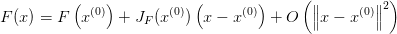
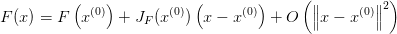
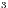
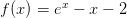
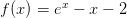

Teorema 3.1.1 (Teorema de Bolzano). Se ![f : [a,b] → ℝ](main780x.png) ,
,  , é
uma função contínua tal que
, é
uma função contínua tal que  , então existe
, então existe  tal
que
tal
que  .
.
O teorema de Bolzano2 nos fornece condições suficientes para a existência do zero de uma função. Este é uma aplicação direta do teorema do valor intermediário.
Demonstração. O resultado é uma consequência imediata do teorema do
valor intermediário que estabelece que dada uma função contínua ![f : [a, b] → ℝ](main785x.png) ,
,
 , tal que
, tal que  (ou
(ou  ), então para qualquer
), então para qualquer
 (ou
(ou  ) existe  tal que
) existe  tal que  . Ou
seja, nestas notações, se
. Ou
seja, nestas notações, se  , então
, então  (ou
(ou
 ). Logo, tomando
). Logo, tomando  , temos que existe
, temos que existe  tal que
tal que
 .
.

Em outras palavras, se é uma função contínua em um dado intervalo no qual ela troca de sinal, então ela têm pelo menos um zero neste intervalo (veja a Figura 3.1).
Solução. Primeiramente, observamos que resolver a equação  é
equivalente a resolver
é
equivalente a resolver  com
com  . Agora, como
. Agora, como
 e , temos do teorema de Bolzano que existe
pelo menos um zero de
e , temos do teorema de Bolzano que existe
pelo menos um zero de  no intervalo
no intervalo  . E, portanto, existe pelo
menos uma solução da equação dada no intervalo
. E, portanto, existe pelo
menos uma solução da equação dada no intervalo  .
.
Podemos usar o Scilab para estudarmos esta função. Por exemplo, podemos
definir a função  e computá-la nos extremos do intervalo dado com os
seguintes comandos:
e computá-la nos extremos do intervalo dado com os
seguintes comandos:
Alternativamente (e com maior precisão), podemos verificar diretamente o sinal da função nos pontos desejados com comando sign:

Quando procuramos aproximações para zeros de funções, é aconselhável isolar cada raiz em um intervalo. Desta forma, gostaríamos de poder garantir a existência e a unicidade da raiz dentro de um dado intervalo. A seguinte proposição nos fornece condições suficientes para tanto.
Em outras palavras, para garantirmos que exista um único zero de uma dada função diferenciável num intervalo, é suficiente que ela troque de sinal e seja monótona neste intervalo.
Exemplo 3.1.2. No Exemplo 3.1.1, mostramos que existe pelo menos um
zero de  no intervalo
no intervalo  , pois
, pois  é contínua
e
é contínua
e  . Agora, observamos que, além disso,
. Agora, observamos que, além disso,  e, portanto,
e, portanto,  para todo
para todo  . Logo, da Proposição 3.1.1,
temos garantida a existência de um único zero no intervalo dado.
. Logo, da Proposição 3.1.1,
temos garantida a existência de um único zero no intervalo dado.
Podemos inspecionar o comportamento da função  e de sua
derivada fazendo seus gráficos no Scilab. Para tanto, podemos fazer o seguinte
teste:
e de sua
derivada fazendo seus gráficos no Scilab. Para tanto, podemos fazer o seguinte
teste:
A discussão feita nesta seção, especialmente o teorema de Bolzano, nos fornece os fundamentos para o método da bisseção, o qual discutimos na próxima seção.
Resposta. Observamos que a equação é equivalente a  . Tomando, então,
. Tomando, então,  , temos que
, temos que  é
contínua em
é
contínua em ![[0,π∕2]](main834x.png) ,
,  e
e  . Logo, do teorema de Bolzano 3.1.1, concluímos que a equação dada
tem pelo menos uma solução no intervalo
. Logo, do teorema de Bolzano 3.1.1, concluímos que a equação dada
tem pelo menos uma solução no intervalo  .
.
Resposta. No Exercício 3.1.1, mostramos que a função  tem um zero no intervalo . Agora,
observamos que
tem um zero no intervalo . Agora,
observamos que  . Como
. Como  para todo
para todo  , temos que
, temos que  em
em  , i.e.
, i.e.
 é monotonicamente decrescente neste intervalo. Logo, da Proposição 3.1.1, temos que existe um único zero da função neste
intervalo.
é monotonicamente decrescente neste intervalo. Logo, da Proposição 3.1.1, temos que existe um único zero da função neste
intervalo.
E 3.1.3. Interprete a equação  como o problema de encontrar a
intersecção da curva
como o problema de encontrar a
intersecção da curva  com
com  . Encontre o valor positivo
. Encontre o valor positivo  para o qual essa equação admite exatamente duas raízes positivas distintas.
para o qual essa equação admite exatamente duas raízes positivas distintas.
Resposta. 
E 3.1.5. Use o teorema de Bolzano para mostrar que o erro absoluto ao
aproximar o zero da função  por
por  é menor
que
é menor
que  .
.
Resposta. Escolhendo o intervalo ![[a,b]=[−1,841 − 10−3,−1,841+ 10−3]](main857x.png) , temos
, temos  e
e
 , i.e.
, i.e.  . Então, o teorema de Bolzano nos garante que o zero exato
. Então, o teorema de Bolzano nos garante que o zero exato  de
de  está no
intervalo
está no
intervalo  . Logo, da escolha feita,
. Logo, da escolha feita,  .
.
Resposta. Basta aplicar as ideias da solução do Exercício 3.1.5.

 no intervalo
no intervalo  .
.
![f : [a,b] → ℝ](main814x.png)


 tem solução no intervalo
tem solução no intervalo ![[0,π ∕2]](main830x.png) .
.
 tem uma única solução no intervalo
tem uma única solução no intervalo
![[0,π∕2 ]](main839x.png) .
.

 para a
solução exata
para a
solução exata  de:
de:

 .
.

 real e que esta solução é única.
real e que esta solução é única.